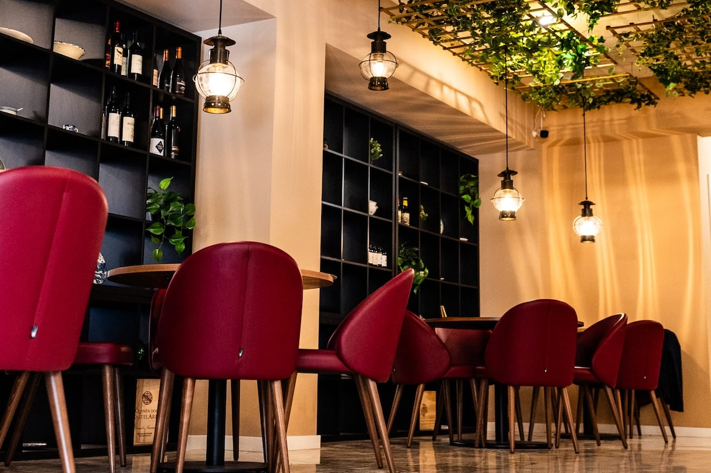
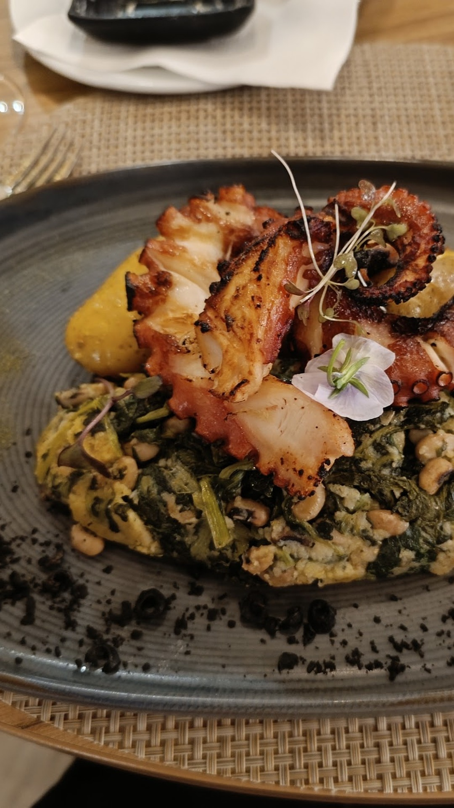
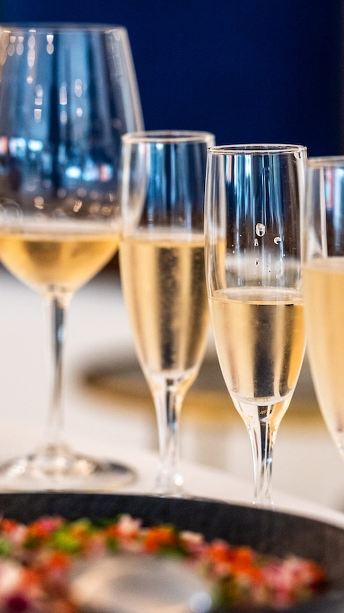

01
Versão 3 · aprovadaHá histórias que se servem à mesa
A identidade, a tradição e o convite a sentar à mesa.
Descarregar reel ↗Não foi possível carregar o vídeo. Usa a ligação para descarregar.

O sabor da cozinha portuguesa. O prazer de ficar mais um pouco. Uma nova forma de contar A Cozinha do Rei.
Um convite, Paulo.Vê os vídeos. Descobre a direção visual. Depois, afinamos juntos.


Há mais num restaurante do que aquilo que chega ao prato. Há um ambiente, pequenos gestos e razões para voltar.
A Cozinha do Rei, no Hotel Afonso V, em Aveiro, é o ponto de partida desta proposta. A ideia é trazer para o ecrã a cozinha portuguesa, os detalhes dos pratos e a experiência à mesa.
Paulo, preparámos três reels para explorar essa direção. Uma primeira conversa em imagens e movimento, para percebermos o que faz sentido para o restaurante.
Três formas de apresentar o restaurante. Carrega no play e liga o som para veres cada proposta por inteiro.
01
Versão 3 · aprovadaA identidade, a tradição e o convite a sentar à mesa.
Descarregar reel ↗Não foi possível carregar o vídeo. Usa a ligação para descarregar.
02
Versão 1 · para revisãoTexturas e detalhes dos pratos, com um ritmo pensado para despertar o apetite.
Descarregar reel ↗Não foi possível carregar o vídeo. Usa a ligação para descarregar.
03
Versão 1 · para revisãoO ambiente e os pequenos gestos que fazem de uma refeição um momento para partilhar.
Descarregar reel ↗Não foi possível carregar o vídeo. Usa a ligação para descarregar.
Demonstrações NOVA7 com edição e recurso a inteligência artificial, a partir das referências reunidas para o projeto. O primeiro reel corresponde à versão aprovada; os restantes estão para revisão. A utilização pública dos materiais depende da validação final e das autorizações necessárias.
Escolhemos um tema do restaurante e reunimos os materiais. A partir daí, definimos uma primeira entrega.
Investimento, prazos e revisões: definidos depois de escolhermos os conteúdos e vermos os materiais disponíveis. Esta apresentação abre a conversa; não é um orçamento fechado.
Reels e imagens sobre os pratos, o ambiente e a experiência à mesa, com uma direção visual própria para A Cozinha do Rei.
Esta proposta centra-se em edição e criação digital à distância. Podemos trabalhar com fotografias e vídeos que nos disponibilizes; uma captação no local teria de ser combinada à parte.
Vês e aprovas os conteúdos antes da entrega. Qualquer apoio à publicação nas redes é definido à parte, juntamente com o âmbito do trabalho.
Escolher os reels a desenvolver, confirmar os materiais que podem ser usados e combinar os ajustes, os prazos e o investimento.
Um prato, um momento à mesa ou uma ideia nova. Diz-nos o que te faz sentido e construímos a proposta a partir daí.
Conversar sobre os reels ↗Podes também responder diretamente à nossa conversa.